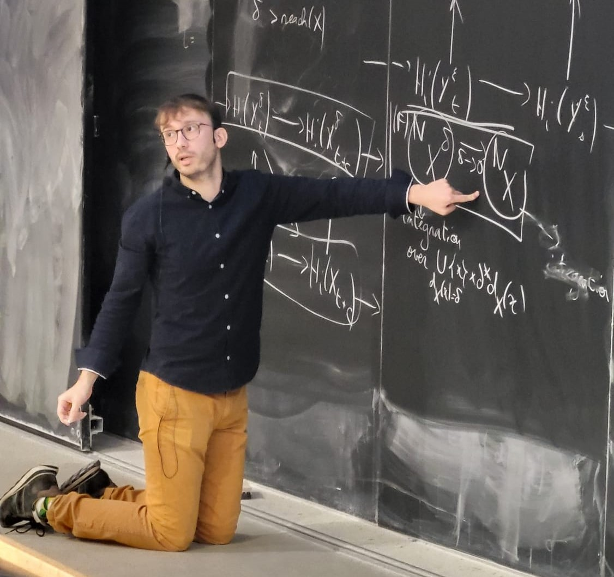

Antoine Commaret

Papers
Persistent Intrinsic Volumes, arXiv version, 2024. With David Cohen-Steiner. Published in Advances in Mathematics.Generalized Morse theory for tubular neighborhoods, arXiv version, 2024. To appear in JTA (Journal of Topology and Analysis).
Modeling high dimensional point clouds with the spherical cluster model, arXiv Preprint, 2025. With Frédéric Cazals & Louis Goldenberg.
Continuity of the normal cycle with respect to C^0 topologies, arXiv Preprint, 2026. With David Cohen-Steiner.
Oncoming talks
- 5 Janvier 2027: Analyse harmonique team seminar, LMO, Orsay.
- 21 janvier 2027: Geometry seminar of the Laboratoire de Mathématiques de l'Université Savoie Mont Blanc, Chambéry.
Talks available online
- Talk Persistent Homology and the geometry of definable sets at the GTM seminar, 06/11/2026.
- Talk Persistent homology and the curvature of singular sets at the Applied Algebraic Topology Research Network online seminar, 04/11/26.
- Approximating the boundary area: when persistent homology meets geometric measure theory. Talk given at the conference Curves and surfaces, Saint-Malo, France, and at the Foundations of computational mathematics Workshop, Vienna, Austria. June and July 2026.
- Persistent homology and the continuity of generalized curvatures. Talk given at the Persistent day, a day dedicated the different applications of persistence theory in geometry and topology. Nice, France. 02/06/26.
- Slides of my PhD Defense. 20/11/2024.
- Here is a talk given at the Applied Topology seminar at Oxford University about Generalized Morse theory for tubular neighborhoods. 16/02/2024.
- Here is a talk given at the 2023 YTM in Lausanne about Generalized Morse theory for certain subsets of Euclidean spaces. July 2023
- Here is a very quick introduction to TDA given at the ARAMIS Lab Seminar, October 2022.
- Talk on basic concepts of geometric measure theory given at the Datashape Seminar, May 2022.
Seminar talks
- Seminar Geometry and topology at Sorbonne Université, Paris. 19/02/2026.
- Seminar of the Jean Kutzmann lab, Grenoble, France. 13/03/2025.